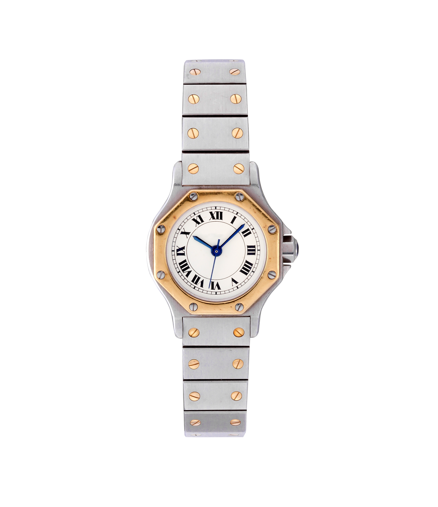

Rolex Datejust
(Two-tone)
Silver Tapestry Dial that creates
a realism effect
Silver Tapestry Dial that creates
a realism effect

The exposed Screw give it
an "industrial-chic" look

The rough organic "bark finish"
crafted to resemble the look
bark of a tree